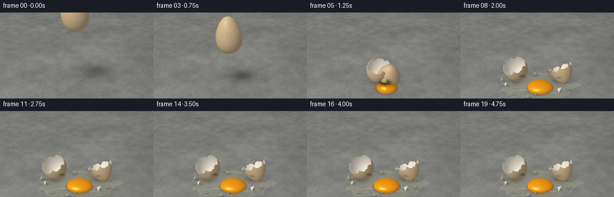
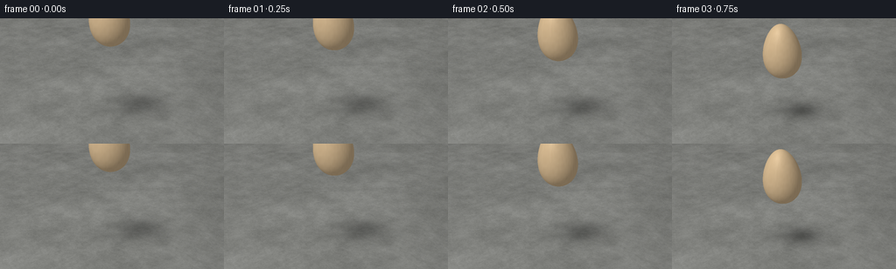
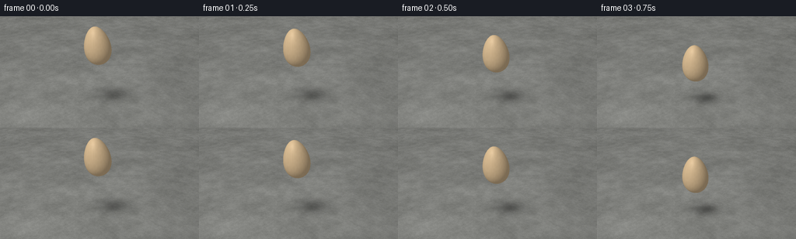
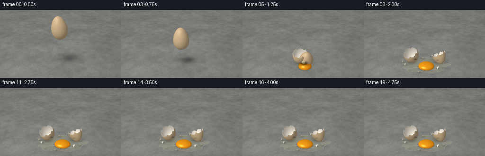

CODING AGENTS AS PIXEL WORLD MODELS
traex/GPT-6.1-Sol · material_0013
点击播放 · 原生 RGB 像素
逐轮保存的候选
回放视频、检查图与代码变化。
每份候选均可单独播放。实际图片检查记录在下方工具轨迹中。
候选 01播放与检查图
点击播放 · 原生 RGB 像素


展开代码变化
--- 上一保存版本
+++ 本次保存版本
@@ -0,0 +1,256 @@
+from pathlib import Path
+import numpy as np
+from PIL import Image, ImageDraw, ImageFilter
+from artifact_io import save
+
+# Entire scene is generated from mathematical geometry and seeded procedural texture.
+ROOT = Path(__file__).resolve().parent
+W,H,S = 256,144,3
+WW,HH = W*S,H*S
+rng = np.random.default_rng(137)
+cam = np.array([0.,-7.8,5.6])
+target = np.array([0.,0.15,1.25])
+forward = (target-cam); forward /= np.linalg.norm(forward)
+right = np.cross(forward,[0,0,1.]); right /= np.linalg.norm(right)
+up = np.cross(right,forward)
+focal = WW/(2*np.tan(np.deg2rad(37)/2))
+light = np.array([-0.46,-0.48,0.75]); light /= np.linalg.norm(light)
+YY,XX = np.mgrid[:HH,:WW]
+rays = forward+(XX[...,None]+.5-WW/2)/focal*right-(YY[...,None]+.5-HH/2)/focal*up
+floor_d = -cam[2]/rays[:,:,2]
+floor_pts = cam + floor_d[:,:,None]*rays
+FX,FY = floor_pts[:,:,0],floor_pts[:,:,1]
+
+# A fixed, perspective-correct concrete slab, with multiscale mineral grain.
+def noise_field(size, seed):
+ rand = np.random.default_rng(seed)
+ return np.array(Image.fromarray((rand.random(size)*255).astype('uint8')).resize((1024,1024),Image.Resampling.BICUBIC),float)/255
+noise_maps = [noise_field((n,n),21+n) for n in (12,48,180,512)]
+u = np.mod((FX+8)/16,1)*1023; v = np.mod((FY+8)/16,1)*1023
+ix,iy = u.astype(int),v.astype(int)
+ns = [a[iy,ix]-.5 for a in noise_maps]
+texture = ns[0]*14+ns[1]*12+ns[2]*8+ns[3]*8
+# Fine pits and quartz inclusions, spread over a solid stone floor.
+fine = np.mod(np.sin(FX*171.8+FY*318.7)*43758.5453,1.)
+texture += (fine<.011)*(-22)+(fine>.988)*13
+base = np.stack([132+texture,133+texture,129+texture],-1)
+illum = .93+.10*np.exp(-((FX+2)**2+(FY+2)**2)/24)
+base *= illum[:,:,None]
+vignette = 1-.115*((XX/WW-.45)**2+(YY/HH-.4)**2)
+base *= vignette[:,:,None]
+# A faint slab joint far behind the impact, not a soft surface.
+line = np.abs(FY-3.65-.13*FX)
+base -= (3.5*np.exp(-(line/.019)**2)+1.1*np.exp(-(line/.055)**2))[:,:,None]
+base = np.clip(base,0,255)
+
+
+def rx(a):
+ a=np.deg2rad(a); c,s=np.cos(a),np.sin(a)
+ return np.array([[1,0,0],[0,c,-s],[0,s,c]])
+def ry(a):
+ a=np.deg2rad(a); c,s=np.cos(a),np.sin(a)
+ return np.array([[c,0,s],[0,1,0],[-s,0,c]])
+def rz(a):
+ a=np.deg2rad(a); c,s=np.cos(a),np.sin(a)
+ return np.array([[c,-s,0],[s,c,0],[0,0,1]])
+
+def egg_surface(theta, phi, inner=False):
+ co,si=np.cos(theta),np.sin(theta)
+ radius=.49*si*(1-.19*co)
+ dr=.49*(co*(1-.19*co)+.19*si*si)
+ z=.73*co
+ p=np.stack([radius*np.cos(phi),radius*np.sin(phi),z],-1)
+ n=np.stack([.73*si*np.cos(phi),.73*si*np.sin(phi),dr],-1)
+ n/=np.maximum(np.linalg.norm(n,axis=-1,keepdims=True),1e-8)
+ if inner: p=p-.026*n; n=-n
+ return p,n
+
+
+def make_egg(part='whole'):
+ nt,np_=30,70
+ uu,pp=np.meshgrid(np.linspace(0,1,nt+1),np.linspace(0,2*np.pi,np_+1),indexing='ij')
+ seam=1.53+.065*np.sin(7*pp+.3)+.038*np.sin(13*pp+.8)+.023*np.sin(23*pp)
+ theta=np.pi*uu if part=='whole' else (uu*seam if part=='top' else seam+(np.pi-seam)*uu)
+ verts,norms=egg_surface(theta,pp)
+ faces=[]
+ for j in range(nt):
+ for k in range(np_):
+ a=j*(np_+1)+k;b=a+np_+1
+ faces.extend([(a,b,a+1),(a+1,b,b+1)])
+ faces=np.array(faces)
+ if part=='whole': return verts.reshape(-1,3),norms.reshape(-1,3),faces,np.zeros(len(faces),int)
+ iv,inn=egg_surface(theta,pp,True)
+ nvert=verts.size//3
+ types=np.r_[np.zeros(len(faces),int),np.ones(len(faces),int)]
+ faces=np.r_[faces,faces[:,::-1]+nvert]
+ # Thin exposed shell thickness along the sharp, serrated fracture.
+ edge=0 if part=='bottom' else nt*(np_+1)
+ extra=[]
+ for k in range(np_):
+ a=edge+k
+ extra.extend([(a,a+1,a+nvert),(a+1,a+1+nvert,a+nvert)])
+ faces=np.r_[faces,np.array(extra)];types=np.r_[types,np.ones(len(extra),int)]
+ return np.r_[verts.reshape(-1,3),iv.reshape(-1,3)],np.r_[norms.reshape(-1,3),inn.reshape(-1,3)],faces,types
+
+whole=make_egg();top=make_egg('top');bottom=make_egg('bottom')
+
+
+def project(p):
+ rel=p-cam
+ depth=rel@forward
+ return np.stack([WW/2+focal*(rel@right)/depth,HH/2-focal*(rel@up)/depth],-1),depth
+
+
+def render_mesh(image,zbuffer,mesh,rotation,pos):
+ points,normals,faces,types=mesh
+ world=points@rotation.T+pos
+ norms=normals@rotation.T
+ screen,depth=project(world)
+ # Vertex lighting creates a smooth diffuse shell with a subtle broad reflection.
+ diffuse=np.clip(norms@light,0,1)
+ view=cam-world;view/=np.linalg.norm(view,axis=1,keepdims=True)
+ halfv=view+light;halfv/=np.linalg.norm(halfv,axis=1,keepdims=True)
+ spec=np.clip(np.sum(norms*halfv,axis=1),0,1)**32
+ illumination=.57+.46*diffuse
+ speckle=(np.sin(points[:,0]*233+points[:,1]*181+points[:,2]*89)*np.sin(points[:,0]*109-points[:,2]*97))
+ outer=(np.array([218.,189.,148.])[None,:]*illumination[:,None]+spec[:,None]*14+speckle[:,None]*2.5)
+ inner=np.array([245.,237.,220.])[None,:]*(.64+.37*diffuse[:,None])+spec[:,None]*7
+ for face,kind in zip(faces,types):
+ tri=screen[face]
+ x0=max(0,int(np.floor(tri[:,0].min())));x1=min(WW-1,int(np.ceil(tri[:,0].max())))
+ y0=max(0,int(np.floor(tri[:,1].min())));y1=min(HH-1,int(np.ceil(tri[:,1].max())))
+ if x0>x1 or y0>y1:continue
+ ax,ay=tri[0];bx,by=tri[1];cx,cy=tri[2]
+ det=(by-cy)*(ax-cx)+(cx-bx)*(ay-cy)
+ if abs(det)<1e-8:continue
+ xs=XX[y0:y1+1,x0:x1+1]+.5;ys=YY[y0:y1+1,x0:x1+1]+.5
+ w0=((by-cy)*(xs-cx)+(cx-bx)*(ys-cy))/det
+ w1=((cy-ay)*(xs-cx)+(ax-cx)*(ys-cy))/det
+ w2=1-w0-w1
+ dep=w0*depth[face[0]]+w1*depth[face[1]]+w2*depth[face[2]]
+ z=zbuffer[y0:y1+1,x0:x1+1]
+ mask=(w0>=-1e-5)&(w1>=-1e-5)&(w2>=-1e-5)&(dep<z)
+ if not np.any(mask):continue
+ colors=(inner if kind else outer)[face]
+ color=w0[...,None]*colors[0]+w1[...,None]*colors[1]+w2[...,None]*colors[2]
+ view=image[y0:y1+1,x0:x1+1]
+ view[mask]=color[mask];z[mask]=dep[mask]
+
+
+def shadow(image,x,y,height,rad=.42,strength=.38):
+ # Shadow shrinks and darkens as the falling egg approaches the ground.
+ sx=x-light[0]/light[2]*height*.65;sy=y-light[1]/light[2]*height*.65
+ radius=rad+.19*height
+ sh=np.exp(-(((FX-sx)/radius)**2+((FY-sy)/(radius*.8))**2)*1.6)
+ image*=1-strength/(1+.3*height)*sh[:,:,None]
+
+
+def liquids(image,zbuffer,t):
+ spreading=1-np.exp(-t*3.5)
+ a=.40+1.24*spreading;b=.25+.64*spreading
+ x=FX-.07;y=FY+.13
+ ang=np.arctan2(y/b,x/a)
+ edge=1+.075*np.sin(5*ang+.8)+.044*np.cos(9*ang)+.032*np.sin(13*ang+.2)
+ rho=np.sqrt((x/a)**2+(y/b)**2)/edge
+ mask=rho<1
+ alpha=np.clip((1-rho)*15,0,1)*(.20+.09*np.maximum(0,1-rho))
+ # Clear albumen lets the concrete grain show through, with a meniscus and reflections.
+ tint=np.stack([183+4*np.sin(FX*4),180+4*np.sin(FX*4),140+4*np.sin(FX*4)],-1)
+ image[:]=image*(1-alpha[:,:,None])+tint*alpha[:,:,None]
+ rim=np.exp(-((rho-.977)/.021)**2)*mask
+ image+=rim[:,:,None]*np.array([15,15,11])
+ highlight=np.exp(-((y+.39+.09*np.sin(x*3))/.022)**2)*np.exp(-((x+.12)/.88)**4)*mask
+ image+=highlight[:,:,None]*35
+ small=np.exp(-((y-.10+.03*np.sin(x*4))/.012)**2)*np.exp(-((x-.70)/.38)**4)*mask
+ image+=small[:,:,None]*18
+ # A plump glossy golden yolk settles into a low dome, not a flat yellow disk.
+ cx=.12;cy=-.33
+ ya=.41+.11*spreading;yb=.38+.045*spreading
+ q=((FX-cx)/ya)**2+((FY-cy)/yb)**2
+ dome=np.sqrt(np.maximum(0,1-q))*(.26-.07*spreading)
+ # Ray/ellipsoid intersection for correct occlusion and 3-D shape.
+ center=np.array([cx,cy,.057]); radii=np.array([ya,yb,.27-.045*spreading])
+ ro=(cam-center)/radii;rd=rays/radii
+ A=np.sum(rd*rd,axis=-1);B=2*np.sum(rd*ro,axis=-1);C=np.sum(ro*ro)-1
+ disc=B*B-4*A*C
+ tt=(-B-np.sqrt(np.maximum(0,disc)))/(2*A)
+ pts=cam+rays*tt[:,:,None]
+ vis=(disc>=0)&(pts[:,:,2]>=.015)&(tt<zbuffer)
+ normal=(pts-center)/(radii*radii);normal/=np.maximum(np.linalg.norm(normal,axis=-1,keepdims=True),1e-8)
+ li=np.clip(normal@light,0,1)
+ vv=cam-pts;vv/=np.linalg.norm(vv,axis=-1,keepdims=True)
+ halfv=vv+light;halfv/=np.linalg.norm(halfv,axis=-1,keepdims=True)
+ specular=np.clip(np.sum(normal*halfv,axis=-1),0,1)
+ yellow=np.stack([244*(.68+.32*li),158*(.60+.40*li),13+li*11],-1)
+ yellow+=specular[:,:,None]**65*np.array([86,97,86])
+ yellow+=specular[:,:,None]**10*np.array([11,13,4])
+ # Tight contact occlusion under the yolk.
+ contact=np.exp(-((q-1.08)/.19)**2)*.12
+ image*=1-contact[:,:,None]
+ image[vis]=yellow[vis];zbuffer[vis]=tt[vis]
+
+# Small curved eggshell splinters, defined on the same egg surface.
+shards=[]
+for i in range(13):
+ phi=rng.uniform(0,2*np.pi);th=rng.uniform(1.20,1.9)
+ extent=rng.uniform(.075,.19)
+ ts=np.array([th-extent,th+extent,th+extent*.28]);ps=np.array([phi,phi-extent,phi+extent*.95])
+ pp,nn=egg_surface(ts,ps)
+ center=pp.mean(axis=0);pp-=center
+ mesh=(np.r_[pp,pp-.023*nn],np.r_[nn,-nn],np.array([[0,1,2],[5,4,3],[0,3,1],[1,3,4],[1,4,2],[2,4,5],[2,5,0],[0,5,3]]),np.array([0,1,1,1,1,1,1,1]))
+ angle=2*np.pi*i/13+rng.uniform(-.2,.2)
+ dest=np.array([np.cos(angle)*rng.uniform(.8,1.9),np.sin(angle)*rng.uniform(.55,1.12),.065])
+ shards.append((mesh,dest,rng.uniform(15,55),rng.uniform(-50,50),rng.uniform(-180,180),rng.uniform(.35,.65)))
+
+frames=[]
+for index in range(20):
+ tm=index/4
+ image=base.copy();zbuffer=floor_d.copy()
+ impact=1.22
+ if tm<impact:
+ fall=(tm/impact)**2
+ pos=np.array([-.08+.08*fall,0.,3.08-2.35*fall])
+ shadow(image,pos[0],pos[1],pos[2]-.73,.46,.46)
+ rotation=ry(-9+14*fall)@rx(3)
+ render_mesh(image,zbuffer,whole,rotation,pos)
+ else:
+ dt=tm-impact
+ settle=1-np.exp(-4.4*dt)
+ liquids(image,zbuffer,dt)
+ # Two recognizable jagged half-shells separate and rock to rest.
+ for part,sign in ((bottom,-1),(top,1)):
+ x=sign*(.10+.86*settle)
+ y=.03+.19*settle
+ angle=(19 if sign<0 else 155)*settle
+ rocking=np.sin(dt*16)*np.exp(-dt*3)*11
+ rotation=rz(sign*19*settle)@rx(angle+rocking)@ry(sign*12*settle)
+ # Preserve a real contact point for each irregular rigid shell.
+ zmin=(part[0]@rotation.T)[:,2].min()
+ bounce=.30*np.sin(np.minimum(dt/.57,1)*np.pi)*(dt<.57)
+ pos=np.array([x,y,-zmin+.017+bounce])
+ shadow(image,x,y,pos[2]+zmin,.45,.30)
+ render_mesh(image,zbuffer,part,rotation,pos)
+ for mesh,dest,ar,br,cr,flight in shards:
+ progress=min(dt/flight,1.)
+ pos=dest.copy();pos[:2]*=(1-(1-progress)**2)
+ rot=rz(cr*progress)@rx(ar*progress)@ry(br*progress)
+ zmin=(mesh[0]@rot.T)[:,2].min()
+ pos[2]=-zmin+.014+.54*np.sin(np.pi*progress)
+ shadow(image,pos[0],pos[1],pos[2],.12,.19)
+ render_mesh(image,zbuffer,mesh,rot,pos)
+ # Several airborne albumen droplets at the first instant after impact.
+ if dt<.65:
+ layer=Image.new('RGBA',(WW,HH));d=ImageDraw.Draw(layer)
+ for j in range(9):
+ an=j*2.399
+ p=np.array([np.cos(an)*dt*2.2,np.sin(an)*dt*1.8,.06+dt*(2.6+.3*np.sin(j))-4.6*dt*dt])
+ if p[2]<.04:continue
+ uv,_=project(p[None]);px,py=uv[0]
+ rr=(.9+.5*(j%3))*S
+ d.ellipse((px-rr,py-rr*1.2,px+rr,py+rr*1.2),fill=(230,223,165,120))
+ d.ellipse((px-rr*.5,py-rr*.9,px,py-rr*.3),fill=(255,252,225,150))
+ image=np.array(Image.alpha_composite(Image.fromarray(np.uint8(np.clip(image,0,255))).convert('RGBA'),layer).convert('RGB'),float)
+ frame=Image.fromarray(np.uint8(np.clip(image,0,255))).resize((W,H),Image.Resampling.LANCZOS)
+ frames.append(np.array(frame))
+ print(f'frame {index:02d} rendered',flush=True)
+save(np.stack(frames),ROOT)
候选 02播放与检查图
点击播放 · 原生 RGB 像素


展开代码变化
--- 上一保存版本
+++ 本次保存版本
@@ -9,11 +9,11 @@
WW,HH = W*S,H*S
rng = np.random.default_rng(137)
cam = np.array([0.,-7.8,5.6])
-target = np.array([0.,0.15,1.25])
+target = np.array([0.,0.15,1.45])
forward = (target-cam); forward /= np.linalg.norm(forward)
right = np.cross(forward,[0,0,1.]); right /= np.linalg.norm(right)
up = np.cross(right,forward)
-focal = WW/(2*np.tan(np.deg2rad(37)/2))
+focal = WW/(2*np.tan(np.deg2rad(47)/2))
light = np.array([-0.46,-0.48,0.75]); light /= np.linalg.norm(light)
YY,XX = np.mgrid[:HH,:WW]
rays = forward+(XX[...,None]+.5-WW/2)/focal*right-(YY[...,None]+.5-HH/2)/focal*up
@@ -209,7 +209,7 @@
impact=1.22
if tm<impact:
fall=(tm/impact)**2
- pos=np.array([-.08+.08*fall,0.,3.08-2.35*fall])
+ pos=np.array([-.08+.08*fall,0.,2.60-1.87*fall])
shadow(image,pos[0],pos[1],pos[2]-.73,.46,.46)
rotation=ry(-9+14*fall)@rx(3)
render_mesh(image,zbuffer,whole,rotation,pos)
可观测工具轨迹
实际执行的命令与返回图片。
命令 1exit 0
/bin/bash -lc 'ls -la && cat prompt.txt && cat GENERATION_RULES.md && cat task_spec.json'
命令 2exit 0
/bin/bash -lc "cat artifact_io.py && python - <<'PY'
import PIL, numpy
print('PIL/numpy available')
PY"命令 3exit 0
/bin/bash -lc "cat > generate.py <<'PY'
from pathlib import Path
import numpy as np
from PIL import Image, ImageDraw, ImageFilter
from artifact_io import save
# Entire scene is generated from mathematical geometry and seeded procedural texture.
ROOT = Path(__file__).resolve().parent
W,H,S = 256,144,3
WW,HH = W*S,H*S
rng = np.random.default_rng(137)
cam = np.array([0.,-7.8,5.6])
target = np.array([0.,0.15,1.25])
forward = (target-cam); forward /= np.linalg.norm(forward)
right = np.cross(forward,[0,0,1.]); right /= np.linalg.norm(right)
up = np.cross(right,forward)
focal = WW/(2*np.tan(np.deg2rad(37)/2))
light = np.array([-0.46,-0.48,0.75]); light /= np.linalg.norm(light)
YY,XX = np.mgrid[:HH,:WW]
rays = forward+(XX[...,None]+.5-WW/2)/focal*right-(YY[...,None]+.5-HH/2)/focal*up
floor_d = -cam[2]/rays[:,:,2]
floor_pts = cam + floor_d[:,:,None]*rays
FX,FY = floor_pts[:,:,0],floor_pts[:,:,1]
# A fixed, perspective-correct concrete slab, with multiscale mineral grain.
def noise_field(size, seed):
rand = np.random.default_rng(seed)
return np.array(Image.fromarray((rand.random(size)*255).astype('uint8')).resize((1024,1024),Image.Resampling.BICUBIC),float)/255
noise_maps = [noise_field((n,n),21+n) for n in (12,48,180,512)]
u = np.mod((FX+8)/16,1)*1023; v = np.mod((FY+8)/16,1)*1023
ix,iy = u.astype(int),v.astype(int)
ns = [a[iy,ix]-.5 for a in noise_maps]
texture = ns[0]*14+ns[1]*12+ns[2]*8+ns[3]*8
# Fine pits and quartz inclusions, spread over a solid stone floor.
fine = np.mod(np.sin(FX*171.8+FY*318.7)*43758.5453,1.)
texture += (fine<.011)*(-22)+(fine>.988)*13
base = np.stack([132+texture,133+texture,129+texture],-1)
illum = .93+.10*np.exp(-((FX+2)**2+(FY+2)**2)/24)
base *= illum[:,:,None]
vignette = 1-.115*((XX/WW-.45)**2+(YY/HH-.4)**2)
base *= vignette[:,:,None]
# A faint slab joint far behind the impact, not a soft surface.
line = np.abs(FY-3.65-.13*FX)
base -= (3.5*np.exp(-(line/.019)**2)+1.1*np.exp(-(line/.055)**2))[:,:,None]
base = np.clip(base,0,255)
def rx(a):
a=np.deg2rad(a); c,s=np.cos(a),np.sin(a)
return np.array([[1,0,0],[0,c,-s],[0,s,c]])
def ry(a):
a=np.deg2rad(a); c,s=np.cos(a),np.sin(a)
return np.array([[c,0,s],[0,1,0],[-s,0,c]])
def rz(a):
a=np.deg2rad(a); c,s=np.cos(a),np.sin(a)
return np.array([[c,-s,0],[s,c,0],[0,0,1]])
def egg_surface(theta, phi, inner=False):
co,si=np.cos(theta),np.sin(theta)
radius=.49*si*(1-.19*co)
dr=.49*(co*(1-.19*co)+.19*si*si)
z=.73*co
p=np.stack([radius*np.cos(phi),radius*np.sin(phi),z],-1)
n=np.stack([.73*si*np.cos(phi),.73*si*np.sin(phi),dr],-1)
n/=np.maximum(np.linalg.norm(n,axis=-1,keepdims=True),1e-8)
if inner: p=p-.026*n; n=-n
return p,n
def make_egg(part='whole'):
nt,np_=30,70
uu,pp=np.meshgrid(np.linspace(0,1,nt+1),np.linspace(0,2*np.pi,np_+1),indexing='ij')
seam=1.53+.065*np.sin(7*pp+.3)+.038*np.sin(13*pp+.8)+.023*np.sin(23*pp)
theta=np.pi*uu if part=='whole' else (uu*seam if part=='top' else seam+(np.pi-seam)*uu)
verts,norms=egg_surface(theta,pp)
faces=[]
for j in range(nt):
for k in range(np_):
a=j*(np_+1)+k;b=a+np_+1
faces.extend([(a,b,a+1),(a+1,b,b+1)])
faces=np.array(faces)
if part=='whole': return verts.reshape(-1,3),norms.reshape(-1,3),faces,np.zeros(len(faces),int)
iv,inn=egg_surface(theta,pp,True)
nvert=verts.size//3
types=np.r_[np.zeros(len(faces),int),np.ones(len(faces),int)]
faces=np.r_[faces,faces[:,::-1]+nvert]
# Thin exposed shell thickness along the sharp, serrated fracture.
edge=0 if part=='bottom' else nt*(np_+1)
extra=[]
for k in range(np_):
a=edge+k
extra.extend([(a,a+1,a+nvert),(a+1,a+1+nvert,a+nvert)])
faces=np.r_[faces,np.array(extra)];types=np.r_[types,np.ones(len(extra),int)]
return np.r_[verts.reshape(-1,3),iv.reshape(-1,3)],np.r_[norms.reshape(-1,3),inn.reshape(-1,3)],faces,types
whole=make_egg();top=make_egg('top');bottom=make_egg('bottom')
def project(p):
rel=p-cam
depth=rel@forward
return np.stack([WW/2+focal*(rel@right)/depth,HH/2-focal*(rel@up)/depth],-1),depth
def render_mesh(image,zbuffer,mesh,rotation,pos):
points,normals,faces,types=mesh
world=points@rotation.T+pos
norms=normals@rotation.T
screen,depth=project(world)
# Vertex lighting creates a smooth diffuse shell with a subtle broad reflection.
diffuse=np.clip(norms@light,0,1)
view=cam-world;view/=np.linalg.norm(view,axis=1,keepdims=True)
halfv=view+light;halfv/=np.linalg.norm(halfv,axis=1,keepdims=True)
spec=np.clip(np.sum(norms*halfv,axis=1),0,1)**32
illumination=.57+.46*diffuse
speckle=(np.sin(points[:,0]*233+points[:,1]*181+points[:,2]*89)*np.sin(points[:,0]*109-points[:,2]*97))
outer=(np.array([218.,189.,148.])[None,:]*illumination[:,None]+spec[:,None]*14+speckle[:,None]*2.5)
inner=np.array([245.,237.,220.])[None,:]*(.64+.37*diffuse[:,None])+spec[:,None]*7
for face,kind in zip(faces,types):
tri=screen[face]
x0=max(0,int(np.floor(tri[:,0].min())));x1=min(WW-1,int(np.ceil(tri[:,0].max())))
y0=max(0,int(np.floor(tri[:,1].min())));y1=min(HH-1,int(np.ceil(tri[:,1].max())))
if x0>x1 or y0>y1:continue
ax,ay=tri[0];bx,by=tri[1];cx,cy=tri[2]
det=(by-cy)*(ax-cx)+(cx-bx)*(ay-cy)
if abs(det)<1e-8:continue
xs=XX[y0:y1+1,x0:x1+1]+.5;ys=YY[y0:y1+1,x0:x1+1]+.5
w0=((by-cy)*(xs-cx)+(cx-bx)*(ys-cy))/det
w1=((cy-ay)*(xs-cx)+(ax-cx)*(ys-cy))/det
w2=1-w0-w1
dep=w0*depth[face[0]]+w1*depth[face[1]]+w2*depth[face[2]]
z=zbuffer[y0:y1+1,x0:x1+1]
mask=(w0>=-1e-5)&(w1>=-1e-5)&(w2>=-1e-5)&(dep<z)
if not np.any(mask):continue
colors=(inner if kind else outer)[face]
color=w0[...,None]*colors[0]+w1[...,None]*colors[1]+w2[...,None]*colors[2]
view=image[y0:y1+1,x0:x1+1]
view[mask]=color[mask];z[mask]=dep[mask]
def shadow(image,x,y,height,rad=.42,strength=.38):
# Shadow shrinks and darkens as the falling egg approaches the ground.
sx=x-light[0]/light[2]*height*.65;sy=y-light[1]/light[2]*height*.65
radius=rad+.19*height
sh=np.exp(-(((FX-sx)/radius)**2+((FY-sy)/(radius*.8))**2)*1.6)
image*=1-strength/(1+.3*height)*sh[:,:,None]
def liquids(image,zbuffer,t):
spreading=1-np.exp(-t*3.5)
a=.40+1.24*spreading;b=.25+.64*spreading
x=FX-.07;y=FY+.13
ang=np.arctan2(y/b,x/a)
edge=1+.075*np.sin(5*ang+.8)+.044*np.cos(9*ang)+.032*np.sin(13*ang+.2)
rho=np.sqrt((x/a)**2+(y/b)**2)/edge
mask=rho<1
alpha=np.clip((1-rho)*15,0,1)*(.20+.09*np.maximum(0,1-rho))
# Clear albumen lets the concrete grain show through, with a meniscus and reflections.
tint=np.stack([183+4*np.sin(FX*4),180+4*np.sin(FX*4),140+4*np.sin(FX*4)],-1)
image[:]=image*(1-alpha[:,:,None])+tint*alpha[:,:,None]
rim=np.exp(-((rho-.977)/.021)**2)*mask
image+=rim[:,:,None]*np.array([15,15,11])
highlight=np.exp(-((y+.39+.09*np.sin(x*3))/.022)**2)*np.exp(-((x+.12)/.88)**4)*mask
image+=highlight[:,:,None]*35
small=np.exp(-((y-.10+.03*np.sin(x*4))/.012)**2)*np.exp(-((x-.70)/.38)**4)*mask
image+=small[:,:,None]*18
# A plump glossy golden yolk settles into a low dome, not a flat yellow disk.
cx=.12;cy=-.33
ya=.41+.11*spreading;yb=.38+.045*spreading
q=((FX-cx)/ya)**2+((FY-cy)/yb)**2
dome=np.sqrt(np.maximum(0,1-q))*(.26-.07*spreading)
# Ray/ellipsoid intersection for correct occlusion and 3-D shape.
center=np.array([cx,cy,.057]); radii=np.array([ya,yb,.27-.045*spreading])
ro=(cam-center)/radii;rd=rays/radii
A=np.sum(rd*rd,axis=-1);B=2*np.sum(rd*ro,axis=-1);C=np.sum(ro*ro)-1
disc=B*B-4*A*C
tt=(-B-np.sqrt(np.maximum(0,disc)))/(2*A)
pts=cam+rays*tt[:,:,None]
vis=(disc>=0)&(pts[:,:,2]>=.015)&(tt<zbuffer)
normal=(pts-center)/(radii*radii);normal/=np.maximum(np.linalg.norm(normal,axis=-1,keepdims=True),1e-8)
li=np.clip(normal@light,0,1)
vv=cam-pts;vv/=np.linalg.norm(vv,axis=-1,keepdims=True)
halfv=vv+light;halfv/=np.linalg.norm(halfv,axis=-1,keepdims=True)
specular=np.clip(np.sum(normal*halfv,axis=-1),0,1)
yellow=np.stack([244*(.68+.32*li),158*(.60+.40*li),13+li*11],-1)
yellow+=specular[:,:,None]**65*np.array([86,97,86])
yellow+=specular[:,:,None]**10*np.array([11,13,4])
# Tight contact occlusion under the yolk.
contact=np.exp(-((q-1.08)/.19)**2)*.12
image*=1-contact[:,:,None]
image[vis]=yellow[vis];zbuffer[vis]=tt[vis]
# Small curved eggshell splinters, defined on the same egg surface.
shards=[]
for i in range(13):
phi=rng.uniform(0,2*np.pi);th=rng.uniform(1.20,1.9)
extent=rng.uniform(.075,.19)
ts=np.array([th-extent,th+extent,th+extent*.28]);ps=np.array([phi,phi-extent,phi+extent*.95])
pp,nn=egg_surface(ts,ps)
center=pp.mean(axis=0);pp-=center
mesh=(np.r_[pp,pp-.023*nn],np.r_[nn,-nn],np.array([[0,1,2],[5,4,3],[0,3,1],[1,3,4],[1,4,2],[2,4,5],[2,5,0],[0,5,3]]),np.array([0,1,1,1,1,1,1,1]))
angle=2*np.pi*i/13+rng.uniform(-.2,.2)
dest=np.array([np.cos(angle)*rng.uniform(.8,1.9),np.sin(angle)*rng.uniform(.55,1.12),.065])
shards.append((mesh,dest,rng.uniform(15,55),rng.uniform(-50,50),rng.uniform(-180,180),rng.uniform(.35,.65)))
frames=[]
for index in range(20):
tm=index/4
image=base.copy();zbuffer=floor_d.copy()
impact=1.22
if tm<impact:
fall=(tm/impact)**2
pos=np.array([-.08+.08*fall,0.,3.08-2.35*fall])
shadow(image,pos[0],pos[1],pos[2]-.73,.46,.46)
rotation=ry(-9+14*fall)@rx(3)
render_mesh(image,zbuffer,whole,rotation,pos)
else:
dt=tm-impact
settle=1-np.exp(-4.4*dt)
liquids(image,zbuffer,dt)
# Two recognizable jagged half-shells separate and rock to rest.
for part,sign in ((bottom,-1),(top,1)):
x=sign*(.10+.86*settle)
y=.03+.19*settle
angle=(19 if sign<0 else 155)*settle
rocking=np.sin(dt*16)*np.exp(-dt*3)*11
rotation=rz(sign*19*settle)@rx(angle+rocking)@ry(sign*12*settle)
# Preserve a real contact point for each irregular rigid shell.
zmin=(part[0]@rotation.T)[:,2].min()
bounce=.30*np.sin(np.minimum(dt/.57,1)*np.pi)*(dt<.57)
pos=np.array([x,y,-zmin+.017+bounce])
shadow(image,x,y,pos[2]+zmin,.45,.30)
render_mesh(image,zbuffer,part,rotation,pos)
for mesh,dest,ar,br,cr,flight in shards:
progress=min(dt/flight,1.)
pos=dest.copy();pos[:2]*=(1-(1-progress)**2)
rot=rz(cr*progress)@rx(ar*progress)@ry(br*progress)
zmin=(mesh[0]@rot.T)[:,2].min()
pos[2]=-zmin+.014+.54*np.sin(np.pi*progress)
shadow(image,pos[0],pos[1],pos[2],.12,.19)
render_mesh(image,zbuffer,mesh,rot,pos)
# Several airborne albumen droplets at the first instant after impact.
if dt<.65:
layer=Image.new('RGBA',(WW,HH));d=ImageDraw.Draw(layer)
for j in range(9):
an=j*2.399
p=np.array([np.cos(an)*dt*2.2,np.sin(an)*dt*1.8,.06+dt*(2.6+.3*np.sin(j))-4.6*dt*dt])
if p[2]<.04:continue
uv,_=project(p[None]);px,py=uv[0]
rr=(.9+.5*(j%3))*S
d.ellipse((px-rr,py-rr*1.2,px+rr,py+rr*1.2),fill=(230,223,165,120))
d.ellipse((px-rr*.5,py-rr*.9,px,py-rr*.3),fill=(255,252,225,150))
image=np.array(Image.alpha_composite(Image.fromarray(np.uint8(np.clip(image,0,255))).convert('RGBA'),layer).convert('RGB'),float)
frame=Image.fromarray(np.uint8(np.clip(image,0,255))).resize((W,H),Image.Resampling.LANCZOS)
frames.append(np.array(frame))
print(f'frame {index:02d} rendered',flush=True)
save(np.stack(frames),ROOT)
PY
python generate.py"命令 4exit 0
/bin/bash -lc "python - <<'PY' import numpy as np cam=np.array([0.,-7.8,5.6]);target=np.array([0,.15,1.25]); f=target-cam;f/=np.linalg.norm(f);r=np.cross(f,[0,0,1]);r/=np.linalg.norm(r);u=np.cross(r,f);foc=768/(2*np.tan(np.deg2rad(37)/2)) for z in [3.81,3.4,3.2]: rel=np.array([0,0,z])-cam print(z,(216-foc*(rel@u)/(rel@f))/3) PY"
命令 5exit 0
/bin/bash -lc "python - <<'PY' import numpy as np for aim,fov in [(1.6,47),(1.7,48),(1.6,45)]: cam=np.array([0.,-7.8,5.6]);target=np.array([0,.15,aim]);f=target-cam;f/=np.linalg.norm(f);r=np.cross(f,[0,0,1]);r/=np.linalg.norm(r);u=np.cross(r,f);foc=256/(2*np.tan(np.deg2rad(fov)/2)) print(aim,fov) for p in [[0,0,3.81],[0,0,2.35],[0,-1.05,0],[0,0,0]]: rel=np.array(p)-cam;print(72-foc*(rel@u)/(rel@f)) PY"
命令 6exit 0
/bin/bash -lc "python - <<'PY' import numpy as np for aim,fov in [(1.45,47),(1.4,46),(1.4,45)]: cam=np.array([0.,-7.8,5.6]);target=np.array([0,.15,aim]);f=target-cam;f/=np.linalg.norm(f);r=np.cross(f,[0,0,1]);r/=np.linalg.norm(r);u=np.cross(r,f);foc=256/(2*np.tan(np.deg2rad(fov)/2)) print(aim,fov) for p in [[0,0,3.33],[0,0,1.87],[0,-1.05,0],[0,0,0]]: rel=np.array(p)-cam;print(72-foc*(rel@u)/(rel@f)) PY"
命令 7exit 0
/bin/bash -lc "python - <<'PY'
p='generate.py'
s=open(p).read().replace('target = np.array([0.,0.15,1.25])','target = np.array([0.,0.15,1.45])').replace('np.deg2rad(37)','np.deg2rad(47)').replace('3.08-2.35*fall','2.60-1.87*fall')
open(p,'w').write(s)
PY
python generate.py"视觉工具实际返回图片 1

视觉工具实际返回图片 2

保存候选 2 份；完成命令 7 次；可验证图片返回 2 张。原始 API 响应与完整日志保留在本地。